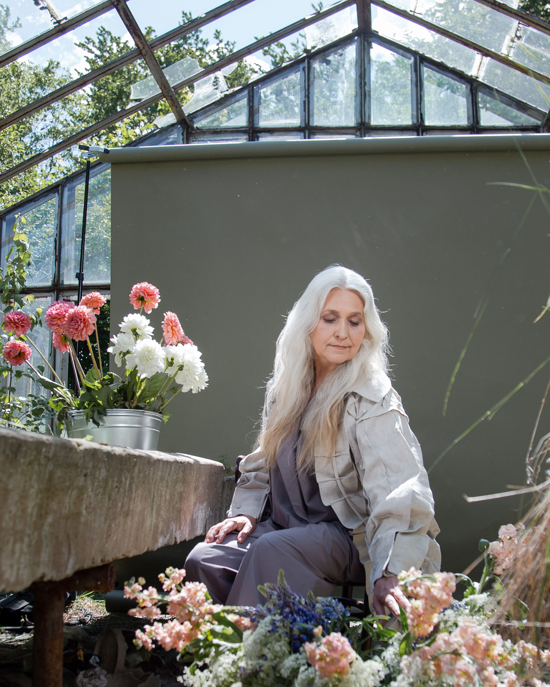

Who is Helen?
From art teacher to host of travellers
In 1998 Helen left her career as an art teacher and travelled to Tibet with a video camera, making a documentary about life in an exile monastery. Longer stays in Mexico, India and Indonesia followed.
Those encounters stayed with her. In 2003 she opened her home to travellers, so the meetings could continue in Stockholm.